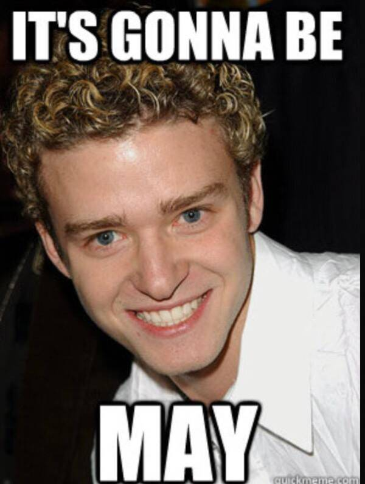
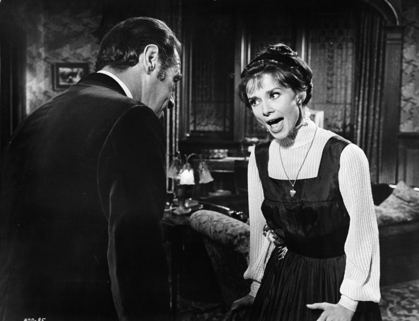

HTML5 and CSS3 Final Challenge
Centered Image
Here's an example of a centered Image.

By setting the width percentage of 10% and setting the margins left and right to auto, I was able to able to change the picture's size.
Filtered
This is an example of a filtered image
On top of centering the image, I chose the "saturate" filter. If I wanted, I could use multiple filters
Three filters, saturate, invert, and brightness were used for the above image.
Sweet dreams!
Image with rounded edges
Let's take a look at a picture with rounded edges.

An' there you 'ave it! Rounded Edges!
To make all of the corners even, I set the border-radius to 50px. By entering just the one "50px", all corners were covered.
We can also make corners sharper than orders as seen below.
As you can see, only two of the corners are rounded. In this case, border-radius was set to 50px and 0px.
An example of a table
| Check-In Date |
Check-out Date |
Total Cost |
| 01/01/20 |
01/07/20 |
600.56 |
| 01/11/20 |
01/17/20 |
600.56 |

GETTIN' REAL TIRED OF
YEH' CRAP ,'ENRY 'IGGINS.
Column 1
This is column 1
Column 2
This is column 2
This sentence use the hover effect. If you mouse over it, you'll notice that it "lights up".

This is an image with a text overlay!
An example of a text overlay